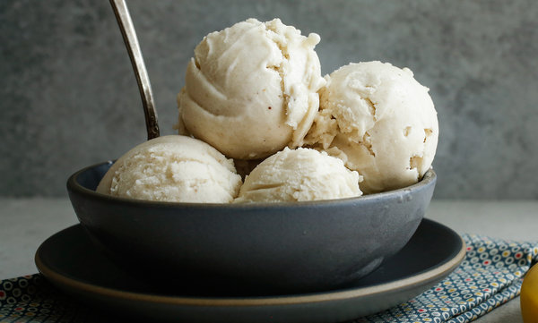

Home
Banana Ice Cream

Description
This is a simple and quick way to get your kids to eat something sweet and healthy that isn't filled with processed sugar.
The better your blender is, the more successful you will be with this one. Ninja recommended!
Ingredients
- 2 bananas
- 1/2 a cup of milk
- cinnamon to taste
Steps
- Chop and freeze the bananas for at least 2 hours.
- When frozen, add bananas and milk to the blender.
- Puree for several minutes until smooth.
- Pour or scoop into a serving bowl.
- Sprinkle cinnamon on top and serve.